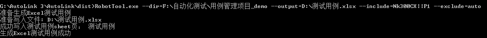

手工测试用例编写指导书-基于 RobotFramework 框架
版次：2021年12月27日 第1版 类型：技术文件 部门：软件部 上层文件: 软件测试规范 上海维宏电子科技股份有限公司 版权所有
| 文件版本 | 修改前文件版本 | 主要修订内容和原因 | 修订人 | 修订日期 |
|---|---|---|---|---|
| R1 | 余晓霞 | 2021/12/27 |
1 目的和范围
在基于代码方式管理测试用例的背景下，本指导书用于给软件测试人员提供基于 RobotFramework 框架如何编写手工测试用例的指导。
背景：公司软件产品的特性是相对长期稳定、可重复使用和多版本共存，因此测试用例和源码一样也属于公司宝贵的资产。随着业务的发展，软件版本越来越多，为了适应软件多版本，及时响应业务需求，简化测试用例的管理，提出了“使用代码方式管理测试用例”的思想，让测试用例和代码一样使用版本管理。此思想的提出也有利于强化手工测试人员对自动化测试的认知和使用，进而提升手工测试人员的编程素质，和强化测试人员对软件版本管理的认知。
2 RobotFramework 编写手工测试用例规范
RobotFramework 介绍应该参考《RobotFramework自动化测试框架使用指导书》，或网上查阅，此处不再做重复介绍。
基于 RobotFramework 框架编写手工测试用例的基础语法和RobotFramework 的基础语法（可参考RobotFramework用户手册-基础语法（外网））保持一致。用例的组织依赖预定义的关键字，例如：do（测试步骤）、assert（预期结果）、prepare （前置条件）、data（测试数据）。执行测试用例集合的创建需要借助命令行导出工具，把用例集导出为 Excel 文件。
2.1 测试套件规范
测试套件是一组测试用例的无序集合，一般来说，这组测试用例是相关的，放在一起便于管理，也称为测试用例集，是对测试用例进行组织和分组的实例。测试用例存在于后缀为 .robot 的用例文件中，这些文件又可以组织在文件夹中，这些文件夹就是更高层次的测试用例集。文件夹类型的测试套件不直接包含用例, 仅包含用例文件集。整个这些文件和文件夹组成了测试套件的层次结构，如下所示。
用例管理项目_demo/
├── 产品I部
│ ├── HPCS # 功能套件文件夹
│ │ └── Test_HPCS.robot # 测试套件文件
│ │ ├── TC001_参数生效表现验证_开启高光精度轮廓光顺功能 # 测试用例
│ │ ├── TC002_参数生效表现验证_HPCS等级 # 测试用例
│ │ └── TC003_参数组合场景
│ │ └── Test_HPCS_效果对比图FSS.robot # 测试套件文件
│ │ ├── TC001_参数63100开启高精度轮廓光顺是否有效 # 测试用例
│ │ ├── TC002_HPCS等级设置是否有效
│ ├── 机械回原点 # 功能套件文件夹
│ │ └── Test_机械回原点.robot # 测试套件文件
│ │ ├── TC001_参数设置基本操作及生效性验证_正向 # 测试用例
│ │ ├── TC002_参数设置基本操作及生效性验证_反向
│ │ └── TC003_Z轴回机械原点流程正确
│
├── 共享用例
│ ├── 参数.robot # 参数共享步骤
│ │ └── 检查参数名称 # 共享步骤
│ │ ├── 检查参数默认值 # 共享步骤
│ │ ├── 检查参数单位
│ │ ├── 检查参数描述
│ │ ├── 检查参数设置权限（同时验证制作商可以使用操作员权限）_正向
│ │ ├── 检查参数设置权限为制造商时，在参数列表操作员无权查看参数_反向
测试套件的层次结构和功能名应该参考软件需求规格说明书。
文件的命名必须以“Test_功能名” 开头，命名格式：Test_功能名_*（*代表：序号 、接口名 、子功能名），其中"*"为可选项，也可留空，根据实际情况决定。
2.2 测试用例规范
测试用例是测试执行集合的最小单元，必须遵循上层文件《软件测试规范》。如下范例所示：
*** Test Cases ***
TC001_参数生效表现验证_开启高精度轮廓光顺功能 #用例标题
[Tags] P1 Auto 测试类型=功能 机型=10轴链式刀库、10轴圆盘刀库 #标签
prepare 全部Z轴有效 未回机械原点 速度参数和其它HPCS参数均为默认值 #前置条件
do 参数“开启高精度轮廓光顺功能”设置为是 #测试步骤
do 载入刀路文件(刀路文件中的路径角度必须包含有大于、小于和等于控制角度的角度)
do 查看轨迹视图的轨迹变化
assert 当刀路中路径角度大于控制角度时则进行光顺处理 #预期结果
assert 当刀路中路径角度等于控制角度时则不进行光顺处理
assert 当刀路中路径角度小于控制角度时则不进行光顺处理
示例说明：
- “*** Test Cases ***” 表示此模块属于用例模块
- 用例标题：TC001_参数生效表现验证_开启高精度轮廓光顺功能。用例标题独占一行，顶格录入，禁止有缩进。
- [Tags] 是 RobotFramework 的标签模块。P1：表示优先级；Auto：表示已实现自动化；“测试类型=功能” 表示测试类型为功能的标签；“机型=10轴链式刀库、10轴圆盘刀库” 表示机型的标签，此用例适用10轴链式刀库、10轴圆盘刀库机型。另外，若所有用例存在相同的标签时，可把相同的标签抽取出来，放在 RobotFramework Settings 模块的 “FORCE TAGS” 标签了。
- prepare 标识此行为前置条件。多个前置条件以两个或两个以上的空格分隔，一个用例仅有一个prepare。
- do 标识此为测试步骤。一个 do 代表一个测试步骤，测试步骤描述和“do”之间至少间隔两个或两个以上的空格。
- assert 标识此为预期结果。一个 assert 代表一个预期结果，预期结果描述和“assert”之间至少间隔两个或两个以上的空格。
2.3 测试数据规范
测试数据维护方式如下：
文件方式维护：
- 测试数据文件存放在用例的data目录下。大文件应该存放在指定的文件服务器。
- 当数据属于文件类型时，若存放在文件服务器，则测试数据填写绝对路径。若存放在用例的data目录，则测试数据填写相对路径或文件名。
表格方式维护，如下范例：
*** Test Cases *** TC004_检查大文件加工软件表现 #用例标题 [Documentation] 主要用于HPCS 对大文件加工的性能测试 #用例描述信息 [Tags] P3 测试类型=性能 #标签 [Template] 测试模板_检查大文件加工软件表现的场景 #引用测试模板“测试模板_检查大文件加工软件表现的场景” #加工文件 预计加工完成时间 0.2.nc 500min #测试数据表 prc.g 200min
*** Keywords *** 测试模板_检查大文件加工软件表现的场景 #测试模板 [Arguments] ${加工文件} ${预计加工完成时间} #模板传参 do 设置开启高精度轮廓光顺的值为：是 do 设置HPCS保持角度的值为:默认值 do 设置HPCS控制误差的值为:默认值 do 设置HPCS区域半径的值为:默认值 do 设置HPCS细分长度的值为:默认值 do 设置HPCS等级的值为：3 do 载入刀路文件 ${加工文件} do 执行模拟加工 assert 等待${预计加工完成时间}直到加工结束 do 记录轨迹视图的轨迹图 assert 检查记录轨迹视图的轨迹图正确
> 示例说明：
>
> 1、范例使用了 RobotFramework 数据驱动测试的用例编写方式。
>
> 2、[Template] 引入模板，“测试模板_检查大文件加工软件表现的场景” 为测试模板名称。
>
> 3、测试模板为自定义的关键字，定义在RF的关键字模块里（文件的“*\*\* Keywords ***”分隔下的模块属于RobotFramework的关键字模块 ）。
>
> 4、“#加工文件 预计加工完成时间 ” 为数据表的表头列。
>
> 5、使用命令行导出工具导出excel后，定义在模板的前置条件、步骤和预期结果会被导出，测试数据以一张新的sheet表格来存储。
> **模板说明**：模板是在需要使用不同的输入或输出数据来测试相同的场景时而产生的。其运行机制支持使用同一个模板自动遍历测试不同的数据。通常其试用范围为当前测试套件。
3. 文本格式维护，如下范例：
```python
*** Test Cases ***
TC001_软限位功能检测有效性（基本流1）
[Tags] P1 测试类型=功能
do 设置各个轴的行程范围：X（0 400）
do 设置X、Y、Z轴工件偏置为50 50 -20
do 已回机械原点
do 检查工作台行程范围是否有效：是
do 载入 @G代码 执行开始加工操作，查看软件表现。
data @G代码： #测试数据
... G00 X10 Z-5
... G01 X30
... X50
... X500
assert 当X轴机械坐标到达400后继续往正向运动时，状态为锁定，界面显示的值为400，软限位X，弹出黄色提示信息“软限位，X轴超过工作台行程范围”
assert 靠近限位边界5mm左右时有一个减速的过程，是为了防止机床抖动；
assert 提示信息显示约3S后自动消失；
do 限位后通过 @方式 控制轴往非限位方向运动
data 加工（范围在行程范围内） 手动 手轮 #测试数据
assert 控制的轴可以往非限位方向运动
范例说明： 1、data 标识此为测试测试数据。测试数据和“data”之间至少间隔两个或两个以上的空格。 2、多个测试数据需要分行编辑时，换行后使用“... ” ，如下所示，注意：当在 robotframework-ride 环境开发用例时，“... ” 会被自动转换成两个空格代替。 data 文件A： ... G00 X10 Z-5 ... G01 X30 ... X50 ... X500 3、多个测试数据不需要分行编辑时，可使用一个空格、逗号或分号进行分割，如：data 加工（范围在行程范围内）手动 手轮
4、data里的测试数据使用命令行导出工具导出excel后，在测试数据列的单元格会根据分隔符进行自动化换行后展示。
2.4 共享步骤规范
1、共享步骤放在“共享用例”目录下的文件。测试用例主体的组织方式和测试用例一样。
示例：
*** Keywords *** #关键字模块
检查参数名称 #共享步骤名称
[Arguments] ${参数名称}
do 检查参数名称 ${参数名称} #测试步骤
asser 参数名称等于${参数名称} #预期结果
检查参数默认值
[Arguments] ${参数默认值}
do 检查参数默认值 ${参数默认值}
asser 参数默认值等于${参数默认值}
2、引用共享步骤，以“call” 作为关键字，对共享步骤进行关联。如下示例：
call 检查参数名称 ${参数名称} #关联共享步骤“检查参数名称”，“${参数名称}”为传参
call 检查参数默认值 ${参数默认值}
3 快速入手操作指南
3.1 从Git 分支上拉取最新的测试用例
测试用例管理的 demo 项目地址为：http://tfs.weihong.com:8080/tfs/SPI/_git/Demo_Project?path=%2F
Git 操作指导可查看 wiki(内网) Git 指南
3.2 创建测试套件
按测试套件规范创建文件夹或文件。例如新增一个断点继续功能，则新增一个名为Test_加工_断点继续.robot的文件。如下所示：
测试用例管理项目Demo/
├── 产品I部
│ ├── 加工 # 功能套件文件夹
│ │ └── Test_加工_断点继续.robot # 测试套件文件
3.3 创建测试用例
1、打开用例文件添加用例模块标识，如下所示。在有些IDE工具（例如：RobotFramework-ride、Pycharm 等）里新增 robot 文件，会自动添加此标识，不需要手工添加。
*** Test Cases ***
2、在“*** Test Cases ***” 标识的模块下开始添加用例，如下所示。
*** Test Cases ***
TC001_检查断点继续功能基本流 #用例标题
[Tags] P1 测试类型=功能 #标签
prepare 不启用断点继续穿孔 #前置条件
do 导入加工文件 test02.ncex #测试步骤
do 启动加工 #测试步骤
do 等待激光开
do 停止加工
do 等待系统状态为空闲
do 在控制栏操作断点继续
assert 系统状态为运行 #预期结果
assert 绿灯亮
assert 加工开始位置为断点位置
TC002_检查暂停状态不可执行断点继续功能 #用例标题
[Tags] P2 测试类型=功能 #标签
prepare 系统状态为暂停状态
do 在控制栏操作断点继续
assert 系统状态为暂停
assert 提示语：当前状态不可执行断点继续
3、把新增或完善后的用例保存，并提交推送到 Git。
3.4 更新测试用例
先拉取最新的用例，然后在本地更新用例后，再提交并推送到 Git。更新用例时必须遵循《软件测试规范》的测试用例管理规范。
4 工具介绍
4.1 用例开发工具
初学者推荐使用 RobotFramework-ride 作为用例开发集成工具，因为 RobotFramework-ride 提供友好的GUI页面，引导使用者编写用例和执行用例，并且提供树形目录结构让用例的目录层次结构更清晰，其具体使用指南可参考《RobotFramework 自动化测试框架使用指导书》的 5.1 章节，或网上自学。
用例开发工具不做限制，大家可使用适合自身的工具，例如：nodepad++、PyCharm、VS Code 等。
4.2 命令行导出工具
命令行导出工具的功能是：根据标签筛选用例，把用例集以 EXCEL 文件方式导出。此工具的获取和最新的详细使用说明可参考内网wiki: http://wiki.weihong.com/pages/viewpage.action?pageId=30245325。
用法：RobotTool.exe --dir=F:\自动化测试\用例管理项目_demo --output=D:\测试用例.xlsx --include="NK300CX||P1" --exclude=auto
选项说明：
--dir：测试用例目录, 默认为当前执行目录。
--output：导出Excel文件的路径，默认为： D://测试用例.xlsx 。
--filter:包含指定功能的测试套件则导出。多个测试套件使用“||”分隔，例如：--filter="安装||机械回原点"
--include: 包含指定标签的测试用例则导出，默认为空。当使用逻辑与或非的时候，需要使用双引号，例如：--include="NK300CX||P1"，因为“||” 和“&&” 是windows命令行自带的特殊字符。
--exclude：包含指定标签的测试用例则不导出，即使满足include 也不导出。默认为空 。用法和include用法相同。
运行示例：

示例说明：
遍历“F:\自动化测试\用例管理项目_demo”目录下的Test_*.robot 文件，把文件里的测试用例导出到Excel文件：D:\导出用例文件.xlsx 。其中只导出包含P1和Nk300cx 标签的用例，并且不包含Auto的测试用例。标签的名称大小写不敏感。
编制： 余晓霞 审核： 批准：
审批链接：